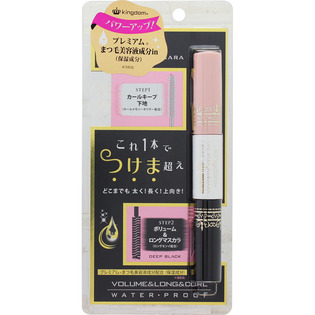

返回列表
产品名称：キングダム ツーステップマスカラＥ ディープブラック

黒龍堂 キングダム ツーステップマスカラＥ ディープブラック ＿
メーカー 黒龍堂
JANコード 4901477040307
商品の特徴
これ1本でつけま超え
パワーアップ！
- 成分・分量
- ベース：イソドデカン、ポリエチレン、(VP/エイコセン)コポリマー、マイクロクリスタリンワックス、パルミチン酸デキストリン、トリメチルシロキシケイ酸、カルナウバロウ、タルク、
ジメチコン、アセチルテトラペプチド‐3、アカツメクサ花エキス、パンテノール、ビオチノイルトリペプチド‐1、ツバキ油、ホホバ種子油、トコフェロール、グリセリン、BG、ヤシ脂肪酸ソルビタン、
ナイロン‐66、ジステアルジモニウムヘクトライト、炭酸プロピレン、水、デキストラン、フェノキシエタノール、酸化鉄、酸化チタン/マスカラ：イソドデカン、ポリエチレン、
ロジン酸ペンタエリスリチル、(ベヘン酸/エイコサン二酸)グリセリル、(パルミチン酸/エチルヘキサン酸)デキストリン、(VP/エイコセン)コポリマー、パルミチン酸デキストリン、
マイクロクリスタリンワックス、トリメチルシロキシケイ酸、ジメチコン、アセチルテトラペプチド‐3、アカツメクサ花エキス、パンテノール、オタネニンジン根エキス、ヒアルロン酸Na、
加水分解シルク、ボタンエキス、カミツレ花エキス、センブリエキス、イチョウ葉エキス、チャ葉エキス、スクワラン、BG、ジステアルジモニウムヘクトライト、炭酸プロピレン、
トリイソステアリン酸ポリグリセリル‐2、水、デキストラン、エタノール、フェノキシエタノール、酸化鉄
- 用法及び用量
- 適量をブラシに取り、まつ毛の根元から毛先に向かってつけてください。下地が完全に乾いた後にマスカラをつけてください。
クレンジングの際はリムーバーまたはクレンジングをご使用ください。